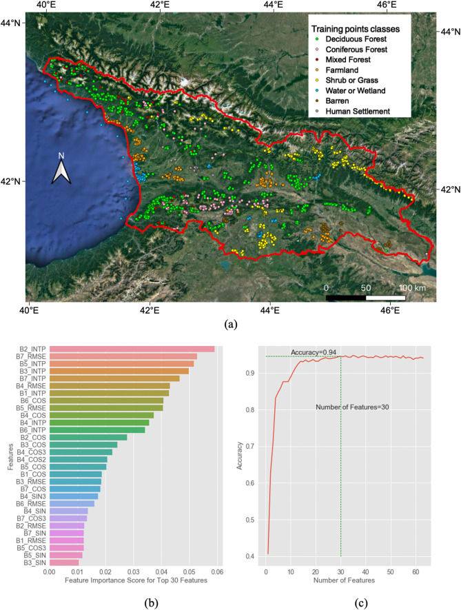
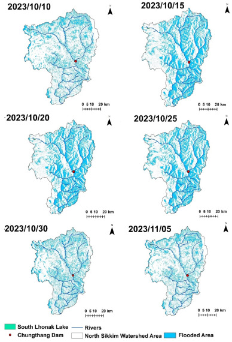

6 Google Earth Engine (GEE)
6.1 Summary
This week we explored Google Earth Engine (GEE), a powerful cloud-based platform for planetary-scale geospatial analysis. The lecture introduced GEE’s architecture, which consists of a JavaScript API frontend and Google’s distributed computing backend that handles petabytes of satellite imagery. We learned about GEE’s data catalog, which provides access to different years of historical imagery and scientific datasets from NASA, ESA, and other providers without requiring local downloads.The platform’s key advantage is its ability to shift processing from client-side to server-side, allowing complex computations on massive datasets that would be impossible on personal computers. We explored GEE’s core data structures: Image (raster data), Feature (vector data), ImageCollection, and FeatureCollection, along with methods to filter, map, and reduce these collections.

In the practical session, we implemented Principal Component Analysis (PCA) on Landsat 8 imagery to identify the main sources of variation across spectral bands. This involved loading an ImageCollection, filtering by date and location, creating a cloud-free composite, and then applying the PCA transformation to extract the principal components. The hands-on exercise demonstrated how GEE’s computational power enables complex statistical analyses that would require significant preprocessing and computing resources in traditional workflows. Compared to our previous work in ArcGIS, GEE offers a much more streamlined experience for satellite image processing - what previously required downloading gigabytes of data and writing lengthy code can now be accomplished with just a few lines of JavaScript in GEE, with results appearing almost instantly. This efficiency completely transforms how we can approach large-scale remote sensing projects, making analyses that were once prohibitively resource-intensive now accessible from any web browser.
6.2 Applications
Google Earth Engine (GEE) has demonstrated remarkable potential in environmental monitoring and disaster management. Chen et al. (2021)(2021) developed a GEE-based approach, the Continuous Change Detection and Classification - Spectral Mixture Analysis (CCDC-SMA), to monitor temperate forest degradation. By combining Landsat time series data with reference sample points, their method achieved high-precision monitoring of forest degradation and deforestation in Georgia from 1987 to 2019. Leveraging GEE’s capability to process extensive time series data, the study analyzed thousands of satellite images to construct a continuous record of forest cover changes. This innovative approach not only overcame the limitations of traditional forest monitoring methods but also significantly enhanced the temporal resolution of change detection.

In urban and environmental studies, Google Earth Engine (GEE) has been widely applied to land surface temperature (LST) estimation. Ermida et al. (2020)(2020) developed an open-source method using GEE for estimating LST from Landsat series satellite data. Their approach, based on single-channel and split-window algorithms, utilizes thermal infrared bands from Landsat 4-8 to generate LST products. Compared to traditional methods, their GEE implementation significantly improved processing efficiency, enabling researchers to quickly produce LST data for large areas over long time series. This open-source tool provides a valuable resource for applications such as urban heat island effect analysis and environmental monitoring.
Halder and Bose (2024)(2024) evaluated the application of Google Earth Engine (GEE) in sustainable flood hazard mapping, with a focus on Glacial Lake Outburst Floods (GLOF). They developed a method for automatically extracting flood extents using time series analysis of Sentinel-1 Synthetic Aperture Radar (SAR) data. The approach compares radar backscatter changes before and after flood events, integrating terrain and land cover information to achieve accurate and efficient flood mapping. Leveraging GEE’s parallel computing capabilities, the analysis can be completed within hours after a disaster occurs, providing critical information for emergency response. This method highlights the potential of GEE for rapid and sustainable flood hazard assessments, particularly in the context of climate change and glacial lake dynamics.

6.3 Reflection
Learning Google Earth Engine has profoundly shown me the immense potential of Earth observation technologies in addressing environmental and urban challenges. As someone who has previously worked on mine land rehabilitation projects, I immediately recognized GEE’s value in this field. Traditional mine area monitoring methods often rely on limited field sampling and intermittent aerial photography, making it difficult to comprehensively capture the dynamic process of mine recovery. GEE’s long time series satellite data and powerful analytical capabilities can help us continuously monitor vegetation recovery, soil erosion changes, and hydrological condition improvements in mining areas, providing more comprehensive evidence for restoration effect assessment.
Specifically, GEE’s PCA capabilities allow for the identification of subtle recovery patterns across mine sites by reducing data dimensionality, enabling more efficient analysis of temporal changes without the computational burden of processing terabytes of raw satellite imagery. However, I also realize that integrating GEE into actual land restoration policies still faces challenges, such as local governments’ acceptance of new technologies, technical personnel training requirements, and how to translate remote sensing results into specific restoration measures. Nevertheless, I believe that as GEE’s user interface continues to improve and more success cases emerge, these barriers will gradually diminish. For me, mastering GEE has not only expanded my technical toolkit but also opened up new possibilities for participating in larger-scale, more systematic environmental restoration projects in the future.